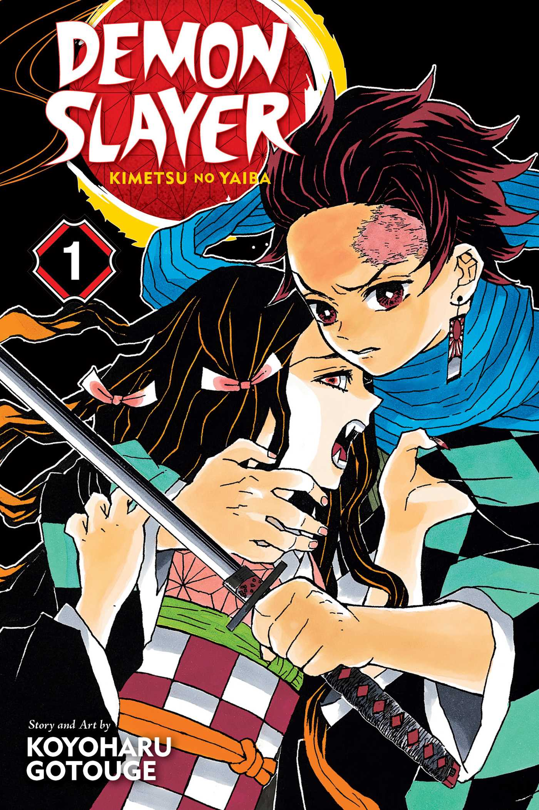

Vagabond

Basado en la novela "Musashi" de Eiji Yoshikawa, Vagabond cuenta la historia de Miyamoto Musashi, considerado uno de los más grandes samuráis de la historia de Japón. La serie explora su viaje desde un joven violento hasta un maestro espadachín que busca el significado verdadero de la fuerza.
Jujutsu Kaisen
Yuji Itadori es un estudiante de high school con habilidades físicas excepcionales que accidentalmente se convierte en el anfitrión de Sukuna, un poderoso hechicero maldito. Para salvar a sus amigos, se une a la organización de hechiceros para erradicar las maldiciones y encontrar todas las partes de Sukuna para destruirlas.
Demon Slayer
Tanjiro Kamado es un joven que se convierte en cazador de demonios después de que su familia es masacrada y su hermana Nezuko es convertida en demonio. La serie sigue su viaje para vengar a su familia y encontrar una cura para su hermana, mientras se enfrenta a poderosos demonios y descubre secretos sobre su propio linaje.
One Punch Man
Saitama es un héroe tan poderoso que puede derrotar a cualquier enemigo con un solo puñetazo. La paradoja es que su abrumadora fuerza lo ha llevado al aburrimiento existencial, ya que anhela encontrar un oponente que le ofrezca un verdadero desafío. La serie combina acción espectacular con humor absurdo.